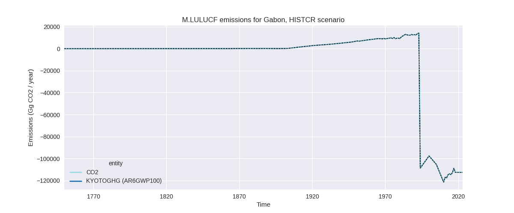
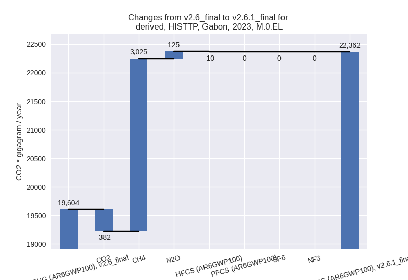

Changes in PRIMAP-hist v2.6.1_final compared to v2.6_final for Gabon
2025-03-19
Johannes Gütschow
Change analysis for Gabon for PRIMAP-hist v2.6.1_final compared to v2.6_final
Overview over emissions by sector and gas
The following figures show the aggregate national total emissions excluding LULUCF AR6GWP100 for the country reported priority scenario. The dotted linesshow the v2.6_final data.

The following figures show the aggregate national total emissions excluding LULUCF AR6GWP100 for the third party priority scenario. The dotted linesshow the v2.6_final data.
Overview over changes
In the country reported priority scenario we have the following changes for aggregate Kyoto GHG and national total emissions excluding LULUCF (M.0.EL):
- Emissions in 2023 have changed by 10.1%% (679.62 Gg CO2 / year)
- Emissions in 1990-2023 have changed by 0.9%% (48.99 Gg CO2 / year)
In the third party priority scenario we have the following changes for aggregate Kyoto GHG and national total emissions excluding LULUCF (M.0.EL):
- Emissions in 2023 have changed by 14.1%% (2758.29 Gg CO2 / year)
- Emissions in 1990-2023 have changed by 0.2%% (40.90 Gg CO2 / year)
Most important changes per scenario and time frame
In the country reported priority scenario the following sector-gas combinations have the highest absolute impact on national total KyotoGHG (AR6GWP100) emissions in 2023 (top 5):
- 1: 1.B.2, CH4 with 384.25 Gg CO2 / year (33.1%)
- 2: M.AG.ELV, CH4 with 172.54 Gg CO2 / year (80.7%)
- 3: M.AG.ELV, N2O with 155.03 Gg CO2 / year (58.4%)
- 4: 1.B.2, CO2 with -43.73 Gg CO2 / year (-5.8%)
- 5: 2, CO2 with 7.30 Gg CO2 / year (7.4%)
In the country reported priority scenario the following sector-gas combinations have the highest absolute impact on national total KyotoGHG (AR6GWP100) emissions in 1990-2023 (top 5):
- 1: 1.B.2, CH4 with 19.68 Gg CO2 / year (1.5%)
- 2: 1.B.2, CO2 with 10.33 Gg CO2 / year (1.0%)
- 3: M.AG.ELV, CH4 with 9.67 Gg CO2 / year (2.7%)
- 4: M.AG.ELV, N2O with 8.52 Gg CO2 / year (2.3%)
- 5: 2, CO2 with 0.58 Gg CO2 / year (0.6%)
In the third party priority scenario the following sector-gas combinations have the highest absolute impact on national total KyotoGHG (AR6GWP100) emissions in 2023 (top 5):
- 1: 1.B.2, CH4 with 3207.51 Gg CO2 / year (32.4%)
- 2: 1.B.2, CO2 with -403.21 Gg CO2 / year (-14.5%)
- 3: 4, CH4 with -255.62 Gg CO2 / year (-50.2%)
- 4: M.AG.ELV, N2O with 115.59 Gg CO2 / year (58.4%)
- 5: M.AG.ELV, CH4 with 73.41 Gg CO2 / year (80.7%)
In the third party priority scenario the following sector-gas combinations have the highest absolute impact on national total KyotoGHG (AR6GWP100) emissions in 1990-2023 (top 5):
- 1: 1.B.2, CH4 with 194.24 Gg CO2 / year (1.4%)
- 2: 4, CH4 with -160.17 Gg CO2 / year (-48.2%)
- 3: M.AG.ELV, N2O with 6.48 Gg CO2 / year (3.2%)
- 4: 1.B.2, CO2 with -5.49 Gg CO2 / year (-0.1%)
- 5: M.AG.ELV, CH4 with 4.26 Gg CO2 / year (3.8%)
Notes on data changes
Here we list notes explaining important emissions changes for the country.
- No new country reported data has been included. Cumulative emissions
changes in the CR scenario are very small.
- 2023 emissions are considerably higher in the CR scenario because of an increase in M.AGL.ELV in the (highly fluctuating) FAO data which is used to extrapolate the country reported data. fugitive CH4 from oil and gas (1.B.2) has an emissions increase post 2020 in the updated EDGAR leading to lower 2023 data in the CR time series.
- In the TP scenario the impact of EDGAR 1.B.2 data is higher as it is not scaled down to match country reported data. CO2 in 1.B.2 and CH4 from waste decrease emissions (also directly from EDGAR). The change in M.AG.ELV in FAO plays a smaller ole as FAO emissions are lower than country reported emissions.
Changes by sector and gas
For each scenario and time frame the changes are displayed for all individual sectors and all individual gases. In the sector plot we use aggregate Kyoto GHGs in AR6GWP100. In the gas plot we usenational total emissions without LULUCF.
country reported scenario
2023
1990-2023
third party scenario
2023

1990-2023

Detailed changes for the scenarios:
country reported scenario (HISTCR):
Most important changes per time frame
For 2023 the following sector-gas combinations have the highest absolute impact on national total KyotoGHG (AR6GWP100) emissions in 2023 (top 5):
- 1: 1.B.2, CH4 with 384.25 Gg CO2 / year (33.1%)
- 2: M.AG.ELV, CH4 with 172.54 Gg CO2 / year (80.7%)
- 3: M.AG.ELV, N2O with 155.03 Gg CO2 / year (58.4%)
- 4: 1.B.2, CO2 with -43.73 Gg CO2 / year (-5.8%)
- 5: 2, CO2 with 7.30 Gg CO2 / year (7.4%)
For 1990-2023 the following sector-gas combinations have the highest absolute impact on national total KyotoGHG (AR6GWP100) emissions in 1990-2023 (top 5):
- 1: 1.B.2, CH4 with 19.68 Gg CO2 / year (1.5%)
- 2: 1.B.2, CO2 with 10.33 Gg CO2 / year (1.0%)
- 3: M.AG.ELV, CH4 with 9.67 Gg CO2 / year (2.7%)
- 4: M.AG.ELV, N2O with 8.52 Gg CO2 / year (2.3%)
- 5: 2, CO2 with 0.58 Gg CO2 / year (0.6%)
Changes in the main sectors for aggregate KyotoGHG (AR6GWP100) are
- 1: Total sectoral emissions in 2022 are 5849.12 Gg
CO2 / year which is 80.7% of M.0.EL emissions. 2023 Emissions have
changed by 6.0% (342.21 Gg CO2 /
year). 1990-2023 Emissions have changed by 0.7% (30.30 Gg CO2 / year). For 2023 the
changes per gas
are:
The changes come from the following subsectors:- 1.A: Total sectoral emissions in 2022 are 3687.59 Gg CO2 / year which is 63.0% of category 1 emissions. 2023 Emissions have changed by 0.1% (2.03 Gg CO2 / year). 1990-2023 Emissions have changed by 0.0% (0.30 Gg CO2 / year).
- 1.B.2: Total sectoral emissions in 2022 are 2161.53
Gg CO2 / year which is 37.0% of category 1 emissions. 2023 Emissions
have changed by 17.7% (340.18 Gg CO2
/ year). 1990-2023 Emissions have changed by 1.3% (30.00 Gg CO2 / year). For 2023 the
changes per gas
are:
There is no subsector information available in PRIMAP-hist.
- 2: Total sectoral emissions in 2022 are 324.11 Gg CO2 / year which is 4.5% of M.0.EL emissions. 2023 Emissions have changed by 1.9% (6.27 Gg CO2 / year). 1990-2023 Emissions have changed by 0.3% (0.50 Gg CO2 / year).
- M.AG: Total sectoral emissions in 2022 are 935.81
Gg CO2 / year which is 12.9% of M.0.EL emissions. 2023 Emissions have
changed by 53.2% (326.22 Gg CO2 /
year). 1990-2023 Emissions have changed by 2.1% (18.06 Gg CO2 / year). For 2023 the
changes per gas
are:
For 1990-2023 the changes per gas are:
The changes come from the following subsectors:- 3.A: Total sectoral emissions in 2022 are 126.81 Gg CO2 / year which is 13.6% of category M.AG emissions. 2023 Emissions have changed by -1.1% (-1.36 Gg CO2 / year). 1990-2023 Emissions have changed by -0.1% (-0.13 Gg CO2 / year).
- M.AG.ELV: Total sectoral emissions in 2022 are
809.00 Gg CO2 / year which is 86.4% of category M.AG emissions. 2023
Emissions have changed by 67.7%
(327.58 Gg CO2 / year). 1990-2023 Emissions have changed by 2.5% (18.19 Gg CO2 / year). For 2023 the
changes per gas
are:
For 1990-2023 the changes per gas are:
There is no subsector information available in PRIMAP-hist.
- 4: Total sectoral emissions in 2022 are 6.16 Gg CO2
/ year which is 0.1% of M.0.EL emissions. 2023 Emissions have changed by
52.9% (2.18 Gg CO2 / year).
1990-2023 Emissions have changed by 17.0% (0.37 Gg CO2 / year). For 2023 the
changes per gas
are:
For 1990-2023 the changes per gas are: - 5: Total sectoral emissions in 2022 are 135.62 Gg
CO2 / year which is 1.9% of M.0.EL emissions. 2023 Emissions have
changed by 2.2% (2.75 Gg CO2 /
year). 1990-2023 Emissions have changed by -0.1% (-0.24 Gg CO2 / year). For 2023 the
changes per gas
are:
third party scenario (HISTTP):
Most important changes per time frame
For 2023 the following sector-gas combinations have the highest absolute impact on national total KyotoGHG (AR6GWP100) emissions in 2023 (top 5):
- 1: 1.B.2, CH4 with 3207.51 Gg CO2 / year (32.4%)
- 2: 1.B.2, CO2 with -403.21 Gg CO2 / year (-14.5%)
- 3: 4, CH4 with -255.62 Gg CO2 / year (-50.2%)
- 4: M.AG.ELV, N2O with 115.59 Gg CO2 / year (58.4%)
- 5: M.AG.ELV, CH4 with 73.41 Gg CO2 / year (80.7%)
For 1990-2023 the following sector-gas combinations have the highest absolute impact on national total KyotoGHG (AR6GWP100) emissions in 1990-2023 (top 5):
- 1: 1.B.2, CH4 with 194.24 Gg CO2 / year (1.4%)
- 2: 4, CH4 with -160.17 Gg CO2 / year (-48.2%)
- 3: M.AG.ELV, N2O with 6.48 Gg CO2 / year (3.2%)
- 4: 1.B.2, CO2 with -5.49 Gg CO2 / year (-0.1%)
- 5: M.AG.ELV, CH4 with 4.26 Gg CO2 / year (3.8%)
Changes in the main sectors for aggregate KyotoGHG (AR6GWP100) are
- 1: Total sectoral emissions in 2022 are 18229.07 Gg
CO2 / year which is 87.9% of M.0.EL emissions. 2023 Emissions have
changed by 16.6% (2813.09 Gg CO2 /
year). 1990-2023 Emissions have changed by 0.9% (189.72 Gg CO2 / year). For 2023 the
changes per gas
are:
The changes come from the following subsectors:- 1.A: Total sectoral emissions in 2022 are 4225.10 Gg CO2 / year which is 23.2% of category 1 emissions. 2023 Emissions have changed by 0.2% (10.08 Gg CO2 / year). 1990-2023 Emissions have changed by 0.0% (0.80 Gg CO2 / year).
- 1.B.2: Total sectoral emissions in 2022 are
14003.97 Gg CO2 / year which is 76.8% of category 1 emissions. 2023
Emissions have changed by 22.1%
(2803.01 Gg CO2 / year). 1990-2023 Emissions have changed by 1.1% (188.92 Gg CO2 / year). For 2023 the
changes per gas
are:
There is no subsector information available in PRIMAP-hist.
- 2: Total sectoral emissions in 2022 are 1472.48 Gg CO2 / year which is 7.1% of M.0.EL emissions. 2023 Emissions have changed by 0.8% (11.73 Gg CO2 / year). 1990-2023 Emissions have changed by 0.2% (1.12 Gg CO2 / year).
- M.AG: Total sectoral emissions in 2022 are 611.52
Gg CO2 / year which is 3.0% of M.0.EL emissions. 2023 Emissions have
changed by 44.1% (187.75 Gg CO2 /
year). 1990-2023 Emissions have changed by 2.4% (10.61 Gg CO2 / year). For 2023 the
changes per gas
are:
For 1990-2023 the changes per gas are:
The changes come from the following subsectors:- 3.A: Total sectoral emissions in 2022 are 130.54 Gg CO2 / year which is 21.3% of category M.AG emissions. 2023 Emissions have changed by -0.9% (-1.24 Gg CO2 / year). 1990-2023 Emissions have changed by -0.1% (-0.12 Gg CO2 / year).
- M.AG.ELV: Total sectoral emissions in 2022 are
480.98 Gg CO2 / year which is 78.7% of category M.AG emissions. 2023
Emissions have changed by 64.3%
(188.99 Gg CO2 / year). 1990-2023 Emissions have changed by 3.4% (10.73 Gg CO2 / year). For 2023 the
changes per gas
are:
For 1990-2023 the changes per gas are:
There is no subsector information available in PRIMAP-hist.
- 4: Total sectoral emissions in 2022 are 278.46 Gg
CO2 / year which is 1.3% of M.0.EL emissions. 2023 Emissions have
changed by -47.5% (-257.04 Gg CO2 /
year). 1990-2023 Emissions have changed by -45.3% (-160.32 Gg CO2 / year). For 2023
the changes per gas
are:
For 1990-2023 the changes per gas are:
- 5: Total sectoral emissions in 2022 are 135.62 Gg
CO2 / year which is 0.7% of M.0.EL emissions. 2023 Emissions have
changed by 2.2% (2.75 Gg CO2 /
year). 1990-2023 Emissions have changed by -0.1% (-0.24 Gg CO2 / year). For 2023 the
changes per gas
are: